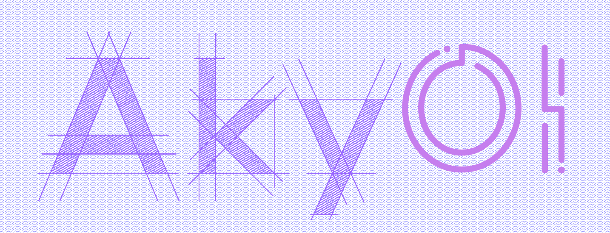

~ 高斯费马，树上开花！~
距 CCF审判日 还有：
D H M S
D H M S
New Blogs !!!
- << 迁移至新网站，具体内容详见左侧一栏
- >> NEUQCSA 2023年10月-月赛 WriteUp
- >> Note_Week_0x08 - 2023/10/19
- >> Note_Week_0x07 - 2023/10/13
- >> NEUQCSA2023招新赛WriteUp - 2023/09/24
- >> BUUCTF - [HarekazeCTF2019]baby_rop1 - 2023/09/18
- >> 2022年徐州市首届编程大赛题解（By Zchared）- 2022/07/02
- >> OI入门（By Zchared）
- >> 看了这个你就会每天在学校康老婆啦~（By Zchared）
- >> NOIP2022 游记（By Zchared）
- >> CSP-S1 2022 游记（By Zchared）
- >> 关于 AkyOI ~
- >> JSOI链接
Improtant!!!
目前这个网站已经被迁移到另外的地方了：https://blog.akyuu.space
那里有着更漂亮的UI，更方便的维护，更丰富的功能
但是，这里是我曾经一点一点敲出来的，算是人生中做的第一个项目吧。所以，我并不打算删除它，反而专门分给它一个二级域名：akyoi.akyuu.space
可以这么说，现在这个网站的功能不再是blog了，而是作为一个纪念物而存在。毕竟大部分的文章都已经迁移到新网站了。
关于之前为什么那么钟爱手搓html？回答就是手搓html能获得一种掌控感。毕竟有些功能是在使用hexo等博客框架之后就没有办法想加就加的，有些UI不是想改就很容易改的。有时为了一个小小的UI细节要读源代码读半天。
咱们不当这个大冤种
但是到了大学之后发现了一个现实：来自学业和竞赛的压力逐渐让我变得追求学习的效率，而不是为了获得这简简单单的游戏般的掌控感。毕竟采用手搓HTML实在耗费太大时间成本了，而且写完还要push到github，之后还要苦苦等待十几分钟等待deploy
但是不得不说这个网站的CSS实在是难以让我继续维护下去。大量的变量名、相似的变量名让我头晕，导致之后每次写文章都是从之前打的模板那里copy过来，然后修改内容，从而写成一篇新的文章。
我逐渐狠狠地拷问自己：这样子值得吗？花着最大的力气，写着别人认为超级丑的UI，创造这没人在意的小心思。
我并不企图让这个网站能够备受赞赏，也不期盼这里会出现在某些人的收藏夹。
我只希望这里能够成为永不磨灭的回忆... ... ... ...
那里有着更漂亮的UI，更方便的维护，更丰富的功能
但是，这里是我曾经一点一点敲出来的，算是人生中做的第一个项目吧。所以，我并不打算删除它，反而专门分给它一个二级域名：akyoi.akyuu.space
可以这么说，现在这个网站的功能不再是blog了，而是作为一个纪念物而存在。毕竟大部分的文章都已经迁移到新网站了。
关于之前为什么那么钟爱手搓html？回答就是手搓html能获得一种掌控感。毕竟有些功能是在使用hexo等博客框架之后就没有办法想加就加的，有些UI不是想改就很容易改的。有时为了一个小小的UI细节要读源代码读半天。
咱们不当这个大冤种
但是到了大学之后发现了一个现实：来自学业和竞赛的压力逐渐让我变得追求学习的效率，而不是为了获得这简简单单的游戏般的掌控感。毕竟采用手搓HTML实在耗费太大时间成本了，而且写完还要push到github，之后还要苦苦等待十几分钟等待deploy
但是不得不说这个网站的CSS实在是难以让我继续维护下去。大量的变量名、相似的变量名让我头晕，导致之后每次写文章都是从之前打的模板那里copy过来，然后修改内容，从而写成一篇新的文章。
我逐渐狠狠地拷问自己：这样子值得吗？花着最大的力气，写着别人认为超级丑的UI，创造这没人在意的小心思。
我并不企图让这个网站能够备受赞赏，也不期盼这里会出现在某些人的收藏夹。
我只希望这里能够成为永不磨灭的回忆... ... ... ...
After Everything
其实早在初中的时候就已经想过搭建一个网站了。但是因为学业和竞赛的原因一直拖延到高二的疫情期间（2022年）。没错，我没听学校的网课，作业也都是科技与狠货。后台挂着钉钉，前面放着HTML+CSS的教程，于是
就开启了这里的旅途。
“~ 高斯费马，树上开花 ~”，这句话来自《膜你抄》的歌词，始终是网页主页最显眼的文字。（OIer专属歌曲是吧）或许正如里面的另一句歌词写的：“只有我一人写的题解，凋零在OJ里面”，这里从诞生起就是一直无人问津。毕竟也是很正常，毕竟 这里没有啥有实力的文章或者题解。
没啥好说的，最后还是以《膜你抄》里面一句歌词画上句号：“蒟蒻蜕变，神犇出现！”
“~ 高斯费马，树上开花 ~”，这句话来自《膜你抄》的歌词，始终是网页主页最显眼的文字。（OIer专属歌曲是吧）或许正如里面的另一句歌词写的：“只有我一人写的题解，凋零在OJ里面”，这里从诞生起就是一直无人问津。毕竟也是很正常，毕竟 这里没有啥有实力的文章或者题解。
没啥好说的，最后还是以《膜你抄》里面一句歌词画上句号：“蒟蒻蜕变，神犇出现！”